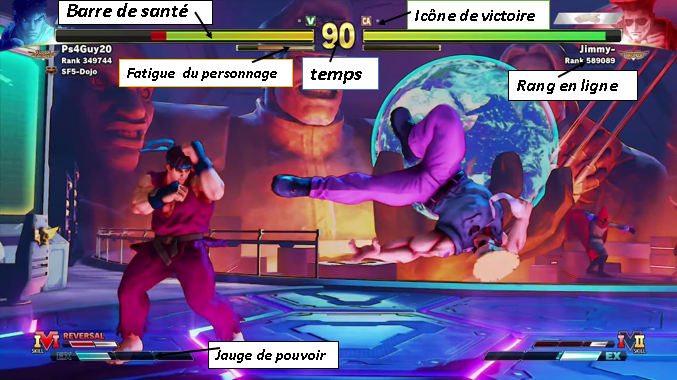
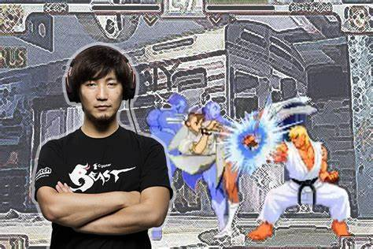
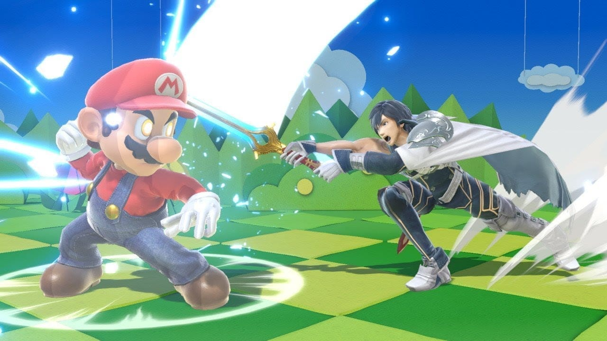

On peut citée pour exemple l'un des mouvements le plus efficace de Ryu
(meme lors l'adversaire tiens une garde en reculant) en apuiyant sur Avant + moyen poings. l'attaque est un coup de poing écrasant à deux coups sur la tête.
Ryu tire son poing en arrière sur son épaule et le pousse vers l'avant et vers le bas,
ce qui donne un effect de recul pour garder une bonne distance par rapport a l'adversaire.
Vous trouverez ici les explications pratique, et les commandes ainci que quelques techniques de combat pour la série Street Fighter.
Tutoriel - Les bases
Voici le shémas des différents coups de bases que l'on peux réalisés pour Ryu :
Notez que les mouvements ci contre sont tirée du jeu "Street fighter 2 X" et que le personnage a depuis evoluée dans ses possibilités offesives.
Interface et principe :
Street fighter possede un systeme de prise en main assez simple pour que chaque joueur (peut importe son niveau ou ses compétences) puisse profiter de son match
Observons ensemble le schemas suivant :

La regle est simple, le premier joueur qui reussira a reduire totalement la barre de santé de son adversaire (en haut de couleur jaune) remportera la manche.
Mais il faudra également prendre en compte le temps, car si la case "Time" passe a 00, alors le joueur qui aura le plus de vie gagnera. D'ou la necessité d'etre rapide.
La série a connnu plusieurs suites vu son immense succès dans les salle de jeux closes, ou les "arcades".
SF est devenu a lui seul une icone du jeu video japonais, dont son apparation dans l'EVO en tant que compétition offciel 3mois après la sortie de l'opus
en 1994.
Depuis la serie a coonus de nombreuses innovations, et cela s'est surtout remarquer lors de la sortie du 3eme opus en Europe au debut des annees 2000.
Daigo Umeahara et la legende de la parrade parfaite :

Le fait d avoir rendu possible de parry absolument tous les coups, y compris les supers permet ce genre de moment d exception. Parce qu une super ou un coup ex, qui est une version amelioree d un coup special,
fait des degats a travers la garde. Se proteger a ce moment la n est pas suffisant lorsque la barre de vie du joueur est quasiment vide. Lors de cet instant precis, Daigo le joueur de Ken n avait aucune autre option que reussir ce parry pratiquement impossible.
Et il l a fait. Alors deja c est vraiment interessant parce que cette mecanique de jeu a creer un moment qui a rassembler les joueurs et qui sert d emblême e-sportif assez celebre et qui permet de faire parler de lui dans tout les types de forum sur le web. Au point qu on en parle un peu trop on ne va pas se mentir.
Beaucoup de gens lui rendent hommage, meme le studio en a fait un defi dans la ressortie de 3rd Strike sur les consoles de jeux Ps3 et X-Box 360 proposant au joueur d essayer de reproduire cette technique.
Figurez vous que j'ai essayer de le reproduire sur le mode mini jeux de Street fighter 3 2th impact (version japonnaise du jeu) ou vous trouverez ma vidéo ci dessous :
Reussir a parrer completement la super art 2 de chun li (finition par le parry en l'air) / ou un super mouvement (tout personnages confondu) :
Si vous avez réussi le challenge, penser a envoyer une preuve video sous format .mp4
Telecharger le pack de ressource suivant : "lancer le jeu se nommant : "sfiii_JP no cd 29f400"
Mais surtout cette fammeuse technique irradie dans bons nombre de jeux de baston et personnellement quand j ai appris que le parry arrivait dans Super Smash Bros Ultimate j ai hallucine.
Elle etait deja presente dans Smash 4 mais elle se produisait lorsqu on appuyait sur la touche de bouclier au bon moment

Gallerie photo (Street fighter 5) :
Ci contre vous pourez visionner un match en direct des joueurs "Supperv" et "Choiboy" participant sur "Street fighter 2X" a l"EVO 2022 qui se déroulait a New-york.
Legende (note) : Light "L" : Coup faible / Medium "M" : coup moyen / Heavy "H" : coup fort(lourd)
Dans tout les jeux Street fighter (sauf execption pour le premier volet), il y'as au total 6 bouttons utilisable par le joueurs pour attaquer :


.png)